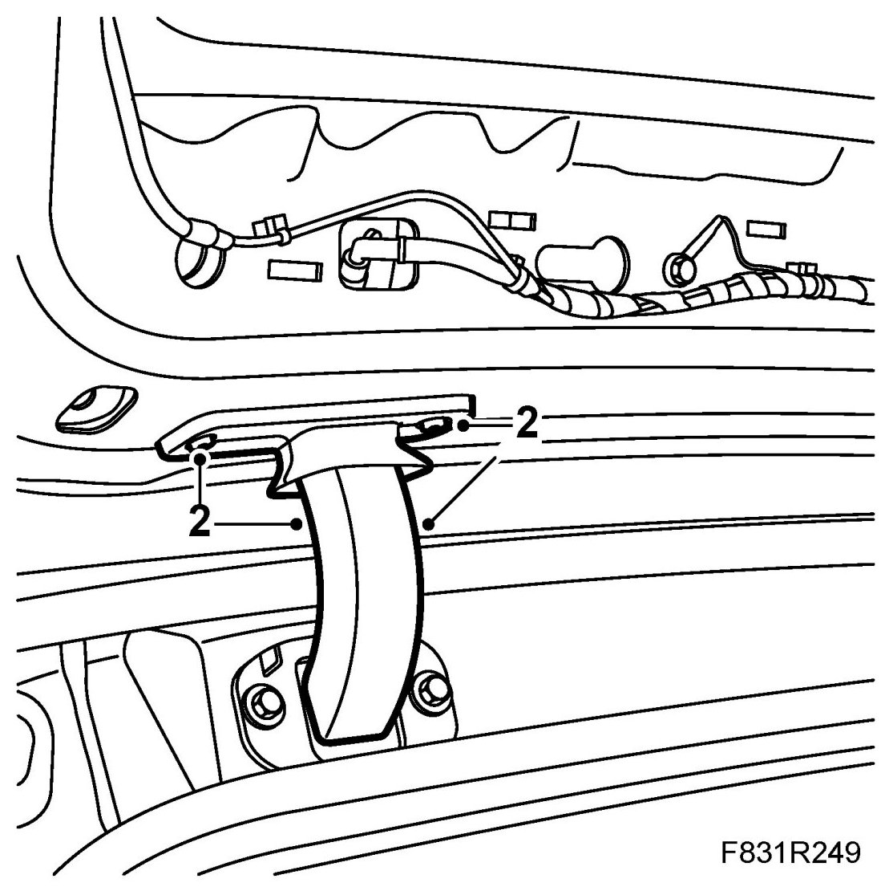
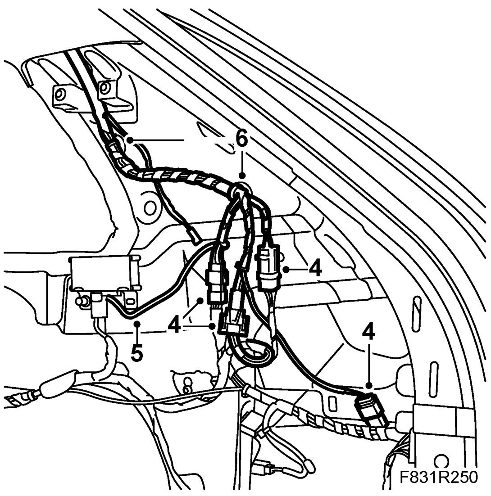
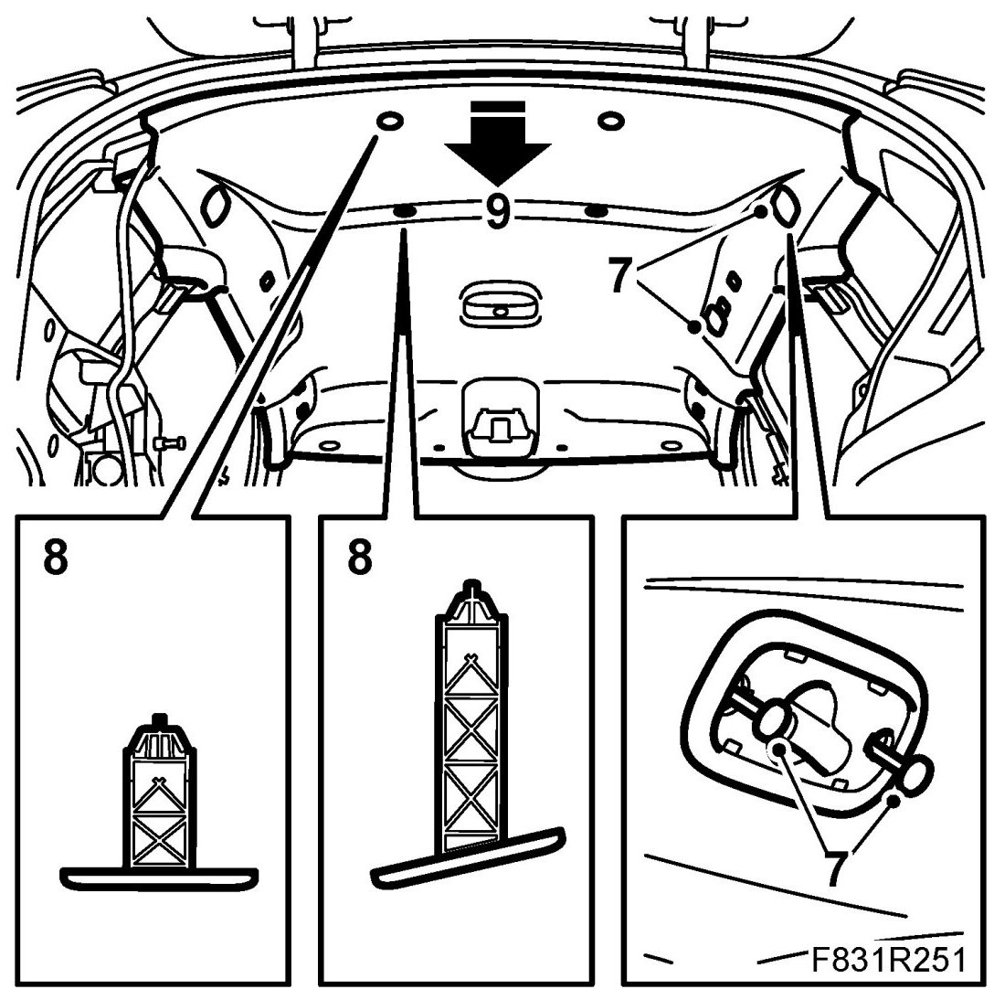
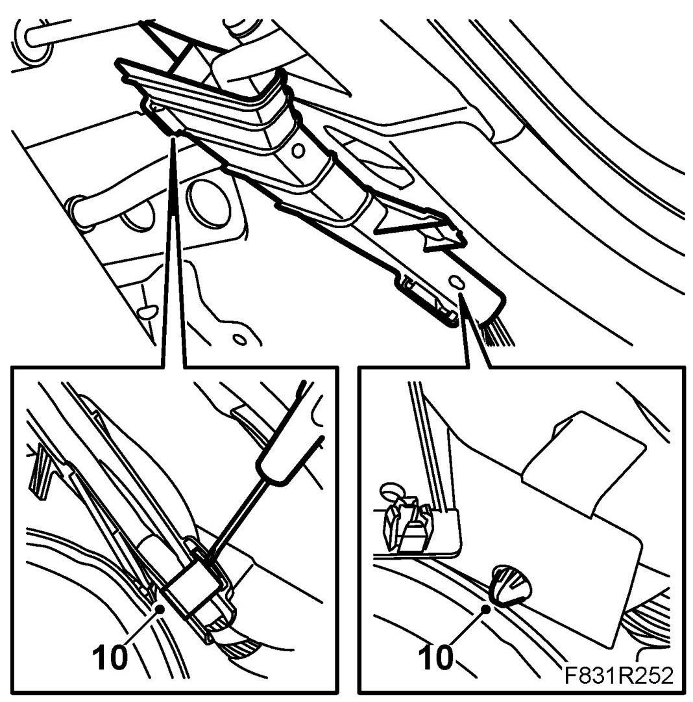
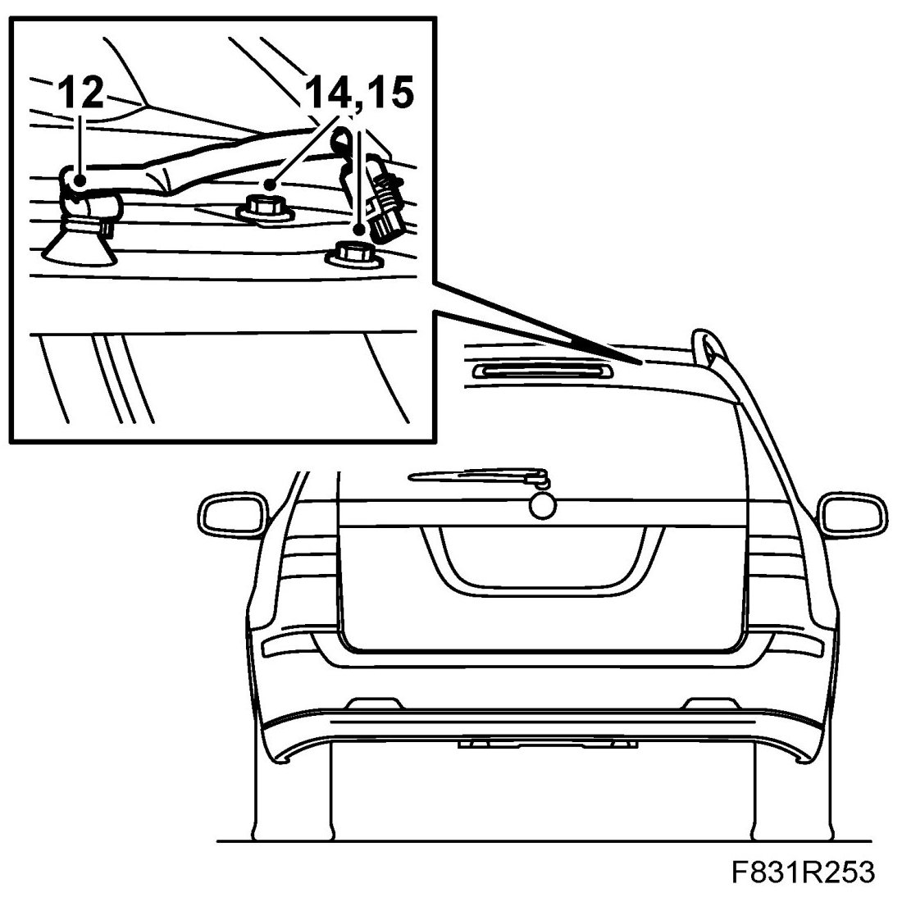
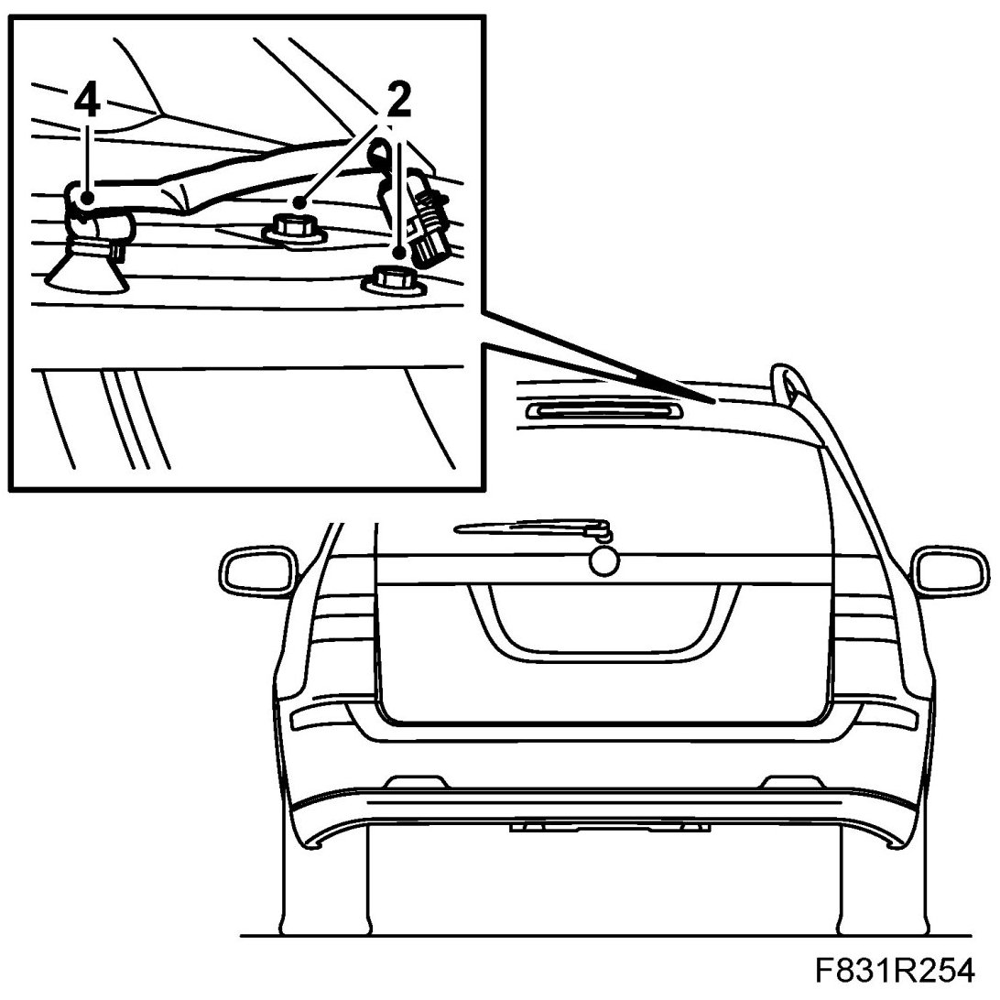
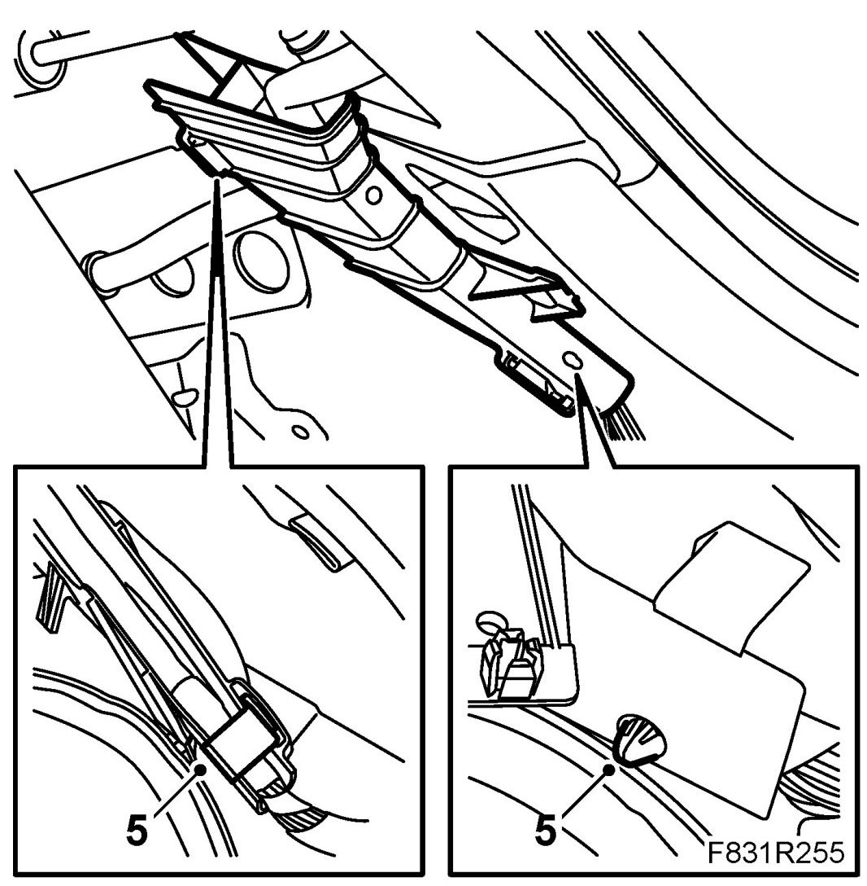
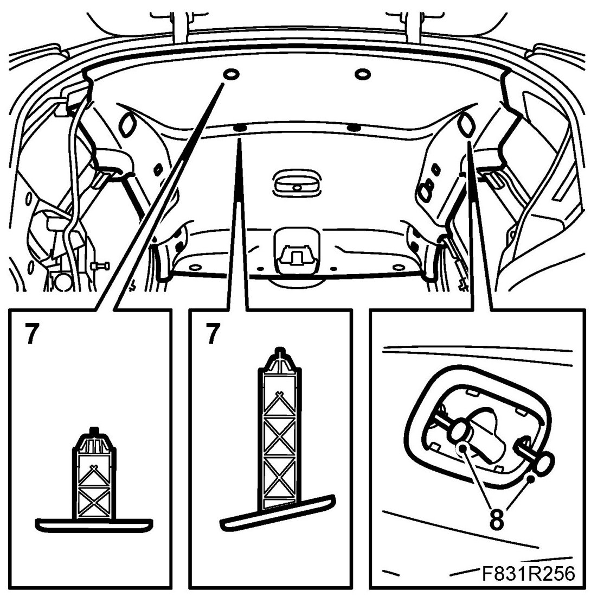
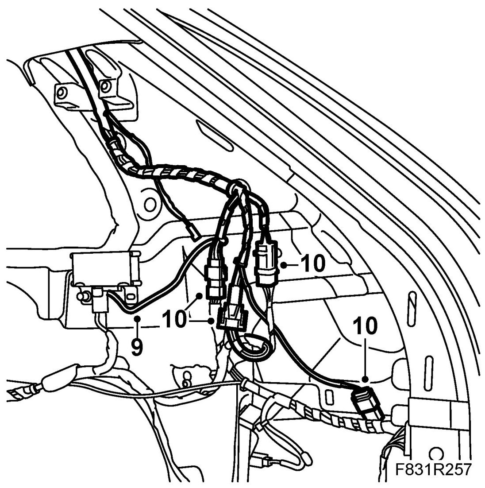

Tailgate
Tailgate
To remove
1. Remove Upper spoiler, 5D.
2. Remove the hinge seals and cable ducts from the hinge.

3. Remove Rear side trim, 5D.
4. Remove the wiring harness connector.

5. Remove the ground cable.
6. Remove the wiring harness clips.
7. Remove the load grille mountings.

8. Remove the rear headlining clips by turning them 90�.
9. Bend down the headlining carefully to access the cable retainer.
10. Remove the cable retainer and open the locking clip. Detach the wiring harness from the cable retainer.

11. Extract the cable by the hinge.
12. Separate the washer hose quick release coupling.

13. To prevent damage to paintwork, place protection between the roof and the tailgate.
14. Mark the position of the tailgate by drawing around the bolts with a marker pen.
15. Have a couple of assistants hold the tailgate. Remove the tailgate bolts. Carefully lift away the tailgate.
To fit
1. Have a couple of assistants hold the tailgate. Carefully lift in place the tailgate.
2. Fit the bolts. Adjust the tailgate to the markings.

3. Insert the cable by the hinge.
4. Fit the washer hose quick release coupling.
5. Fit the wiring harness onto the cable retainer. Fit the cable retainer clips. Fit the cable retainer.

6. Bend the headlining back in place.
7. Fit the rear headlining clips.

8. Fit the load grille mountings on the right-hand side.
9. Fit the ground cable.

10. Fit the wiring harness connector.
11. Fit Rear side trim, 5D.
12. Fit the hinge seals and cable ducts to the hinge.
13. Fit Upper spoiler, 5D.
14. Check the operation of the washers and wipers.